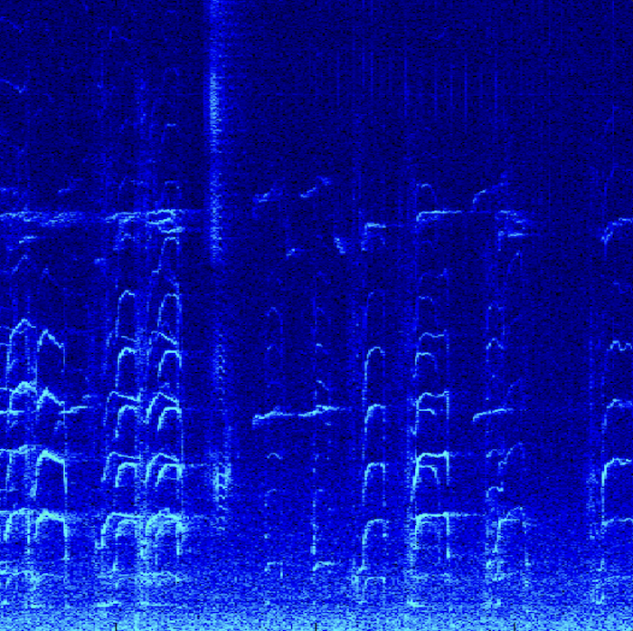

Recherche
Mes intérêts quant à la recherche sont très variés : des vagues de chaleur marines aux interactions biophysiques, en passant par la dynamique du transport océanique et la propagation du son dans l'eau. Ce travail requiert l'utilisation d'une une combinaison de simulations numériques des courants océaniques et atmosphériques, de données d'imagerie satellite et d'observations en mer. De plus, je souhaite faire le pont entre la recherche scientifique et les applications en conservation marine par le biais de collaborations avec les communautés côtières.
Acoustique sous-marine & protection des mammifères marins
Ocean Networks Canada possède un vaste réseau d'hydrophones, déployés dans les trois océans du Canada : le Pacifique, l'Atlantique et l'Arctique. L'augmentation de l'activité humaine en mer apporte son lot de pollution sonore dans l'océan, au détriment de la faune et des mammifères marins comme les baleines. Les données acoustiques marines nous permettent notamment de cartographier les couloirs de migration des baleines ainsi que les zones de trafic maritime. Écoutez ici les sons capturés par nos hydrophones.

Océanographie côtière et partenariats autochtones
Le programme Community Fishers d'Ocean Networks Canada soutient les communautés côtières autochtones partout au Canada afin de protéger les zones océaniques côtieres au sein de leurs territoires. Nous établissons des bases de référence pour des paramètres océaniques comme la température, la salinité, la chlorophylle et l'oxygène, afin de mieux comprendre les changements environnementaux et leurs impacts sur les écosystèmes marins. Les communautés partenaires sont situées en Colombie-Britannique, à Terre-Neuve-et-Labrador, au Nunatsiavut, au Nunavik et au Nunavut.

Transport océanique dans le Golfe d'Alaska
Le Golfe d'Alaska est une région importante pour la pêche, et est très vulnérable aux phénomènes climatiques extrêmes tels que El Niño et les vagues de chaleur marines. Mes recherches étudient comment divers facteurs peuvent altérer le transport des eaux côtières riches en nutriments vers l'intérieur du bassin, une zone qui en est naturellement pauvre. J'utilise le Lagrangian particle tracking pour simuler et analyser les trajectoires de ces eaux côtières par les courants marins et tourbillons de mésoéchelle.

Sub-mésoéchelle & interactions biophysiques
La dynamique de sub-mésoéchelle désigne les mouvements océaniques qui se produisent à des échelles de 1 à 10 kilomètres. J'utilise des données d'observations océaniques à haute résolution issues de l'expédition en mer S-MODE IOP2 (2023) à bord du navire de recherche Sally Ride, pour étuder les interactions biophysiques au sein de ces structures. Ces travaux contribuent aux efforts visant à mieux comprendre le cycle du carbon océanique.

Vagues de chaleur marines & extrêmes climatiques
Les vagues de chaleur marines sont des périodes prolongées où la température d'eau de surface est anormalement élevée. À l'aide de modèles océaniques et atmosphériques, j'ai étudié comment les flux de chaleur atmosphère-océan influencent les précipitations et la redistribution des masses d'eau côtières dans le Pacifique Nord-Est. Je m'intéresse également aux conséquences de ces extrêmes sur les perturbations des écosystèmes marins, par exemple le blanchissement des coraux et la concentration d'oxygène dans l'eau.